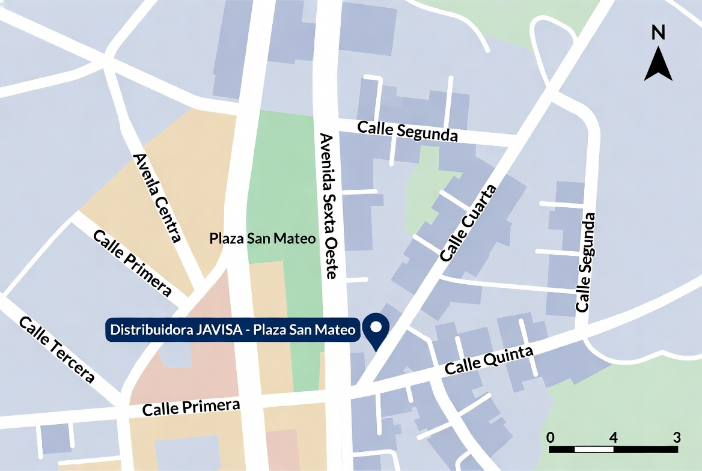

Nuestra Ubicación
Sucursal David – Plaza San Mateo
Dirección: Plaza San Mateo, Avenida Sexta Oeste, detrás del Edificio del Registro Público, Distrito de David, Provincia de Chiriquí, Panamá.
Esta ubicación fue elegida por su accesibilidad desde la carretera Interamericana, proximidad a zonas comerciales y residenciales de David, y facilidad de acceso para vehículos de carga. Plaza San Mateo es un complejo comercial relativamente nuevo que ofrece locales con buenas condiciones de seguridad y estacionamiento.
Análisis realista: David es el centro económico del occidente panameño. Ubicar una distribuidora farmacéutica aquí permite atender hospitales locales, clínicas y farmacias de Chiriquí, Bocas del Toro y parte de Veraguas, además de servir como hub de consolidación para envíos hacia Tocumen. Sin embargo, el costo de locales comerciales en zonas céntricas ha subido, y se requiere inversión adicional en acondicionamiento de bodega (temperatura controlada, estanterías especializadas, sistemas de seguridad y cámaras).
Mapa de la Sucursal
Mapa ilustrativo de la zona de Plaza San Mateo en David (Avenida Sexta Oeste):

Ilustración generada para el prototipo. Para ubicación exacta se recomienda verificar en Google Maps o Waze con “Plaza San Mateo David”.
Cómo llegar
- Desde la Interamericana: tomar desvío hacia el centro de David, continuar por Avenida Central y girar hacia Avenida Sexta Oeste.
- Referencia: detrás del nuevo edificio del Registro Público de David.
- Estacionamiento disponible dentro de la plaza para clientes y proveedores.